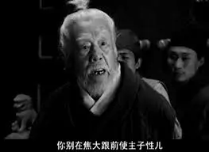

第七回 送宫花贾琏戏熙凤 宴宁府宝玉会秦钟1
话说周瑞家的送了刘姥姥去后，便上来回王夫人话。谁知王夫人不在上房，问丫鬟们时，方知往薛姨妈那边闲话去了。周瑞家的听说，便转出东角门至东院，往梨香院2来。刚至院门前，只见王夫人的丫鬟金钏儿，和一个才留了头3的小女孩儿站在台阶坡上顽。见周瑞家的来了，便知有话回，因向内努嘴儿。
周瑞家的轻轻掀帘进去，只见王夫人和薛姨妈长篇大套的说些家务人情等语。周瑞家的不敢惊动，遂进里间来。只见薛宝钗穿着家常衣服，头上只散挽着 儿4，坐在炕里边，伏在小炕桌上同丫鬟莺儿正描花样子5呢。见他进来，宝钗才放下笔，转过身来，满面堆笑让：”周姐姐坐。”周瑞家的也忙陪笑问”姑娘好？”一面炕沿上坐了，因说：”这有两三天也没见姑娘到那边逛逛去，只怕是你宝兄弟冲撞了你不成？”宝钗笑道：”那里的话。只因我那种病又发了，所以这两天没出屋子。”周瑞家的道：”正是呢，姑娘到底有什么病根儿，也该趁早儿请个大夫来，好生开个方子，认真吃几剂药，一势儿6除了根才是。小小的年纪倒作下个病根儿，也不是顽的。”宝钗听了便笑道：”再不要提吃药。为这病请大夫吃药，也不知白花了多少银子钱呢。凭你什么名医仙药，从不见一点儿效。后来还亏了一个秃头和尚，说专治无名之症，因请他看了。他说我这是从胎里带来的一股热毒，幸而先天壮，还不相干7；若吃寻常药，是不中用的。他就说了一个海上方8，又给了一包药末子作引子9，异香异气的，不知是那里弄了来的。他说发了时吃一丸就好。倒也奇怪，吃他的药倒效验些。”
儿4，坐在炕里边，伏在小炕桌上同丫鬟莺儿正描花样子5呢。见他进来，宝钗才放下笔，转过身来，满面堆笑让：”周姐姐坐。”周瑞家的也忙陪笑问”姑娘好？”一面炕沿上坐了，因说：”这有两三天也没见姑娘到那边逛逛去，只怕是你宝兄弟冲撞了你不成？”宝钗笑道：”那里的话。只因我那种病又发了，所以这两天没出屋子。”周瑞家的道：”正是呢，姑娘到底有什么病根儿，也该趁早儿请个大夫来，好生开个方子，认真吃几剂药，一势儿6除了根才是。小小的年纪倒作下个病根儿，也不是顽的。”宝钗听了便笑道：”再不要提吃药。为这病请大夫吃药，也不知白花了多少银子钱呢。凭你什么名医仙药，从不见一点儿效。后来还亏了一个秃头和尚，说专治无名之症，因请他看了。他说我这是从胎里带来的一股热毒，幸而先天壮，还不相干7；若吃寻常药，是不中用的。他就说了一个海上方8，又给了一包药末子作引子9，异香异气的，不知是那里弄了来的。他说发了时吃一丸就好。倒也奇怪，吃他的药倒效验些。”
周瑞家的因问：”不知是个什么海上方儿？姑娘说了，我们也记着，说与人知道，倘遇见这样病，也是行好的事。”宝钗见问，乃笑道：”不用这方儿还好，若用了这方儿10，真真把人琐碎死。东西药料一概都有限，只难得’可巧’二字：要春天开的白牡丹花蕊11十二两12，夏天开的白荷花蕊十二两，秋天的白芙蓉蕊十二两，冬天的白梅花蕊十二两。将这四样花蕊，于次年春分13这日晒干，和在药末子一处，一齐研14好。又要雨水15这日的雨水十二钱1617，……“周瑞家的忙道：”嗳哟！这么说来，这就得三年的工夫。倘或雨水这日竟不下雨，这却怎处呢？”宝钗笑道：”所以说那里有这样可巧的雨，便没雨也只好再等罢了。还要白露18这日的露水十二钱，霜降19这日的霜十二钱，小雪20这日的雪十二钱。把这四样水调匀，和了药，再加十二钱蜂蜜，十二钱白糖，丸21了龙眼22大的丸子，盛在旧磁坛内，埋在花根底下。若发了病时，拿出来吃一丸，用十二分黄柏23煎汤送下。”
以前一直没看懂这里为什么是三年？这次才发现春分在公历3月，雨水在公历2月，真的是细节满满。
周瑞家的听了笑道：”阿弥陀佛，真巧死人的事儿！等十年未必都这样巧的呢。”宝钗道：”竟好，自他说了去后，一二年间可巧都得了，好容易配成一料。如今从南带至北，现在就埋在梨花树24底下呢。”周瑞家的又问道：”这药可有名字没有呢？”宝钗道：”有。这也是那癞头和尚说下的，叫作’冷香丸’。”周瑞家的听了点头儿，因又说：”这病发了时到底觉怎么着？”宝钗道：”也不觉甚怎么着，只不过喘嗽些，吃一丸下去也就好些了。”
上面这几段话生动地展现了古代富贵人家的讲究。仅仅是喘嗽之小疾，就能如此大费周章，与普通人家形成了鲜明的对比。
周瑞家的还欲说话时，忽听王夫人问：”谁在房里呢？”周瑞家的忙出去答应了，趁便回了刘姥姥之事。略待半刻，见王夫人无语，方欲退出，薛姨妈忽又笑道：”你且站住。我有一宗25东西，你带了去罢。”说着便叫香菱。只听帘栊26响处，方才和金钏顽的那个小丫头进来了，问：”奶奶叫我作什么？”薛姨妈道：”把匣子里的花儿拿来。”香菱答应了，向那边捧了个小锦匣27来。薛姨妈道：”这是宫里头的新鲜样法28，拿纱堆的花儿十二支。昨儿我想起来，白放着可惜了儿的，何不给他们姊妹们戴去。昨儿要送去，偏又忘了。你今儿来的巧，就带了去罢。你家的三位姑娘，每人一对，剩下的六枝，送林姑娘两枝，那四枝给了凤哥罢。”王夫人道：”留着给宝丫头戴罢，又想着他们作什么。”薛姨妈道：”姨娘不知道，宝丫头古怪着呢，他从来不爱这些花儿粉儿的。”
薛家是皇商，所以有宫里头的新鲜玩意儿。宝钗不爱花粉，自有一股英气。
说着，周瑞家的拿了匣子，走出房门，见金钏仍在那里晒日阳儿29。周瑞家的因问他道：”那香菱小丫头子，可就是常说临上京时买的、为他打人命官司的那个小丫头子么？”金钏道：”可不就是他30。”正说着，只见香菱笑嘻嘻的走来。周瑞家的便拉了他的手，细细的看了一会，因向金钏儿笑道：”倒好个模样儿，竟有些像咱们东府里蓉大奶奶的品格儿。”金钏儿笑道：”我也是这们说呢。”周瑞家的又问香菱：”你几岁投身到这里？”又问：”你父母今在何处？今年十几岁了？本处31是那里人？”香菱听问，都摇头说：”不记得了。”周瑞家的和金钏儿听了，倒反为叹息伤感一回。
一时间周瑞家的携花至王夫人正房后头来。原来近日贾母说孙女儿们太多了，一处挤着倒不方便，只留宝玉黛玉二人这边解闷，却将迎、探、惜三人移到王夫人这边房后三间小抱厦32内居住，令李纨陪伴照管。如今周瑞家的故顺路先往这里来，只见几个小丫头子都在抱厦内听呼唤呢。迎春的丫鬟司棋与探春的丫鬟待书33二人正掀帘子出来，手里都捧着茶钟，周瑞家的便知他们姊妹在一处坐着呢，遂进入内房，只见迎春、探春二人正在窗下围棋。周瑞家的将花送上，说明缘故。二人忙住了棋，都欠身道谢，命丫鬟们收了。
见丫鬟即知主人，周瑞家的也是人精。
周瑞家的答应了，因34说：”四姑娘不在房里，只怕在老太太那边呢。”丫鬟们道：”那屋里不是四姑娘？”周瑞家的听了，便往这边屋里来。只见惜春正同水月庵的小姑子35智能儿一处顽耍呢，见周瑞家的进来，惜春便问他何事。周瑞家的便将花匣打开，说明原故。惜春笑道：”我这里正和智能儿说，我明儿也剃了头同他作姑子去呢，可巧又送了花儿来；若剃了头，可把这花儿戴在那里呢？”说着，大家取笑一回，惜春命丫鬟入画来收了36。
周瑞家的因34问智能儿：”你是什么时候来的？你师父那秃歪剌3738往那里去了？”智能儿道：”我们一早就来了。我师父见了太太，就往于老爷府内去了，叫我在这里等他呢。”周瑞家的又道：”十五的月例香供39银子可曾得了没有？”智能儿摇头儿说：”我不知道。”惜春听了，便问周瑞家的：”如今各庙月例银子是谁管着？”周瑞家的道：”是余信40管着。”惜春听了笑道：”这就是了。他师父一来，余信家的就赶上来，和他师父咕唧了半日，想是就为这事了。”
那周瑞家的又和智能儿劳叨了一会，便往凤姐儿处来。穿夹道从李纨后窗下过，隔着玻璃窗户，见李纨在炕上歪着睡觉呢，遂越过西花墙41，出西角门进入凤姐院中。走至堂屋，只见小丫头丰儿坐在凤姐房门槛上，见周瑞家的来了，连忙摆手儿叫他往东屋里去。周瑞家的会意，忙蹑42手蹑足往东边房里来，只见奶子43正拍着大姐儿睡觉呢。周瑞家的悄问奶子道：”姐儿睡中觉呢？也该请醒了。”奶子摇头儿。正说着，只听那边一阵笑声，却有贾琏的声音。接着房门响处，平儿拿着大铜盆出来，叫丰儿舀水进去。平儿便到这边来，一见了周瑞家的便问：”你老人家又跑了来作什么？”周瑞家的忙起身，拿匣子与他，说送花儿一事。平儿听了，便打开匣子，拿了四枝，转身去了。半刻工夫，手里拿出两枝来，先叫彩明吩咐道：”送到那边府里给小蓉大奶奶戴去。”次后44方命周瑞家的回去道谢。
周瑞家的这才往贾母这边来。穿过了穿堂，抬头忽见他女儿打扮着才从他婆家来。周瑞家的忙问：”你这会跑来作什么？”他女儿笑道：”妈一向身上好？我在家里等了这半日，妈竟不出去，什么事情这样忙的不回家45？我等烦了，自己先到了老太太跟前请了安了，这会子请太太的安去。妈还有什么不了的差事，手里是什么东西？”周瑞家的笑道：”嗳！今儿偏偏的来了个刘姥姥，我自己多事，为他跑了半日；这会子又被姨太太看见了，送这几枝花儿与姑娘奶奶们。这会子还没送清楚呢。你这会子跑了来，一定有什么事。”他女儿笑道：”你老人家倒会猜。实对你老人家说，你女婿前儿因多吃了两杯酒，和人分争，不知怎的被人放了一把邪火46，说他来历不明，告到衙门里，要递解47还乡。所以我来和你老人家商议商议，这个情分，求那一个可了事呢？”周瑞家的听了道：”我就知道呢。这有什么大不了的事！你且家去48等我，我给林姑娘送了花儿去就回家去。此时太太二奶奶都不得闲儿，你回去等我。这有什么，忙的如此。”女儿听说，便回去了，又说：”妈，好歹49快来。”周瑞家的道：”是了。小人儿家50没经过什么事，就急得你这样了。”说着，便到黛玉房中去了。
谁知此时黛玉不在自己房中，却在宝玉房中大家解九连环51玩呢。周瑞家的进来笑道：”林姑娘，姨太太着我送花儿与姑娘戴来了。”宝玉听说，便先问：”什么花儿？拿来给我。”一面早伸手接过来了。开匣看时，原来是宫制堆纱52新巧的假花儿。黛玉只就宝玉手中看了一看，便问道：”还是单送我一人的，还是别的姑娘们都有呢？”周瑞家的道：”各位都有了，这两枝是姑娘的了。”黛玉冷笑道：”我就知道，别人不挑剩下的也不给我。”周瑞家的听了，一声儿不言语。宝玉便问道：”周姐姐，你作什么到那边去了？”周瑞家的因说：”太太在那里，因回话去了，姨太太就顺便叫我带来了。”宝玉道：”宝姐姐在家作什么呢？怎么这几日也不过这边来？”周瑞家的道：”身上不大好呢。”宝玉听了，便和丫头说：”谁去瞧瞧？只说我与林姑娘打发了来请姨太太姐姐安，问姐姐是什么病，现吃什么药。论理我该亲自来的，就说才从学里来，也着了些凉，异日再亲自来看罢。”说着，茜雪53便答应去了。周瑞家的自去，无话。
虽然是别人挑剩下的，不高兴也是人之常情，但黛玉马上表露出来，一是显得少不更事、缺乏心机，容易得罪人；二则反映出她寄人篱下的不安。
原来这周瑞的女婿，便是雨村的好友冷子兴，近因卖古董和人打官司，故教女人来讨情分54。周瑞家的仗着主子的势利，把这些事也不放在心上，晚间55只求求凤姐儿便完了。
至掌灯时分，凤姐已卸了妆，来见王夫人回话：”今儿甄家送了来的东西，我已收了。咱们送他的，趁着他家有年下56进鲜57的船回去，一并都交给他们带了去罢？”王夫人点头。凤姐又道：”临安伯老太太生日的礼已经打点了，派谁送去呢？”王夫人道：”你瞧谁闲着，就叫他们去四个女人就是了，又来当什么正经事问我。”凤姐又笑道：”今日珍大嫂子来，请我明日过去逛逛，明日倒没有什么事情。”王夫人道：”有事没事都害不着什么。每常58他来请，有我们，你自然不便意59；他既不请我们，单请你，可知是他诚心叫你散淡60散淡，别辜负了他的心，便有事也该过去才是。”凤姐答应了。当下李纨、迎、探等姐妹们亦来定省61毕，各自归房无话。
次日凤姐梳洗了，先回王夫人毕，方来辞贾母。宝玉听了，也要跟了逛去。凤姐只得答应，立等62着换了衣服，姐儿两个坐了车，一时进入宁府。早有贾珍之妻尤氏与贾蓉之妻秦氏婆媳两个，引了多少姬妾丫鬟媳妇等接出仪门。那尤氏一见了凤姐，必先笑嘲一阵，一手携了宝玉同入上房来归坐。秦氏献茶毕，凤姐因说：”你们请我来作什么？有什么好东西孝敬我，就快献上来，我还有事呢。”尤氏秦氏未及答话，地下63几个姬妾先就笑说：”二奶奶今儿不来就罢，既来了就依不得二奶奶了。”正说着，只见贾蓉进来请安。宝玉因问：”大哥哥今日不在家么？”尤氏道：”出城与老爷请安去了。可是，你怪闷的，坐在这里作什么？何不也去逛逛。”
秦氏笑道：”今儿巧，上回宝叔立刻要见的我那兄弟，他今儿也在这里，想在书房里呢，宝叔何不去瞧一瞧？”宝玉听了，即便下炕要走。尤氏凤姐都忙说：”好生着，忙什么？”一面便吩咐好生小心跟着，别委曲着他，倒比不得跟了老太太过来就罢了。凤姐说道：”既这么着，何不请进这秦小爷来，我也瞧一瞧。难道我见不得他不成？”尤氏笑道：”罢，罢！可以不必见，他比不得咱们家的孩子们，胡打海摔64的惯了。人家的孩子都是斯斯文文的惯了，乍见了你这破落户65，还被人笑话死了呢。”凤姐笑道：”普天下的人，我不笑话就罢了。竟叫这小孩子笑话我不成？”贾蓉笑道：”不是这话，他生的腼腆，没见过大阵仗66儿，婶子见了，没的67生气。”凤姐道：”凭他什么样儿的，我也要见一见！别放你娘的屁了。再不带我看看，给你一顿好嘴巴。”贾蓉笑嘻嘻的说：”我不敢扭着，就带他来。”
凤姐言语狠厉，地位和性格使然。
说着，果然出去带进一个小后生来，较宝玉略瘦些，眉清目秀，粉面朱唇，身材俊俏，举止风流，似在宝玉之上，只是怯怯羞羞，有女儿之态，腼腆含糊，慢向凤姐作揖问好。凤姐喜的先推宝玉，笑道：”比下去了！”便探身一把携了这孩子的手，就命他身傍坐了，慢慢的问他：几岁了，读什么书，弟兄几个，学名唤什么。秦钟一一答应了。早有凤姐的丫鬟媳妇们见凤姐初会秦钟，并未备得表礼68来，遂忙过那边去告诉平儿。平儿知道凤姐与秦氏厚密，虽是小后生家69，亦不可太俭，遂自作主意，拿了一匹70尺头71、两个”状元及第”的小金锞子72，交付与来人送过去。凤姐犹笑说太简薄73等语。秦氏等谢毕。一时吃过饭，尤氏、凤姐、秦氏等抹骨牌74，不在话下。
凤姐给出的礼物折合当时的银价应该已经超过了上一回给刘姥姥的二十两银子。在《红楼梦》第五十三回中提到宁府年节中打制的押岁锞子，“一百五十三两六钱七分，里头成色不等，共总倾了二百二十个锞子”，由此可算出一个锞子大概是七钱左右，即 0.7 两，那么两个金锞子大概是 1.4 两左右。清朝时期金与银的比价通常为 1:8 左右，所以这两个金锞子换算成银子大约是 1.4×8 = 11.2 两银子。而一匹品质较好的衣料，其价值很可能超过9两银子。
凤姐给予刘姥姥二十两银子只是怜悯和施舍，而给秦钟则是出于对秦氏的亲密关系、对宝玉新交好友的示好、展示自己的大方和权势等多种原因。
那宝玉自见了秦钟的人品75出众，心中似有所失，痴了半日，自己心中又起了呆意，乃自思道：”天下竟有这等人物！如今看来，我竟成了泥猪癞狗了。可恨我为什么生在这侯门公府之家，若也生在寒门薄宦之家，早得与他交结，也不枉生了一世。我虽如此比他尊贵，可知锦绣纱罗，也不过裹了我这根死木头；美酒羊羔，也不过填了我这粪窟泥沟。’富贵’二字，不料遭我荼毒76了！”秦钟自见了宝玉形容出众，举止不凡，更兼金冠绣服，骄婢侈童77，心中亦自思道：”果然这宝玉怨不得人溺爱他。可恨我偏生于清寒之家，不能与他耳鬓交接，可知’贫窭’78二字限人，亦世间之大不快事。”二人一样的胡思乱想。忽然宝玉问他读什么书。秦钟见问，因而答以实话。二人你言我语，十来句后，越觉亲密起来。
人性啊，只羡慕别人有的，却不懂得珍惜自己已经拥有的幸福。知足常乐。
一时摆上茶果，宝玉便说：”我两个又不吃酒，把果子摆在里间小炕上，我们那里坐去，省得闹你们。”于是二人进里间来吃茶。秦氏一面张罗与凤姐摆酒果，一面忙进来嘱宝玉道：”宝叔，你侄儿倘或言语不防头79，你千万看着我，不要理他。他虽腼腆，却性子左强80，不大随和此是有的。”宝玉笑道：”你去罢，我知道了。”秦氏又嘱了他兄弟一回，方去陪凤姐。
一时凤姐尤氏又打发人来问宝玉：”要吃什么，外面有，只管要去。”宝玉只答应着，也无心在饮食上，只问秦钟近日家务等事。秦钟因说：”业师81于去年病故，家父又年纪老迈，残疾82在身，公务繁冗，因此尚未议及再延师83一事，目下不过在家温习旧课而已。再读书一事，必须有一二知己为伴，时常大家讨论，才能进益。”宝玉不待说完，便答道：”正是呢，我们却有个家塾84，合族85中有不能延师的，便可入塾读书，子弟们中亦有亲戚在内可以附读86。我因业师上年回家去了，也现荒废着呢。家父之意，亦欲暂送我去温习旧书，待明年业师上来，再各自在家里读。家祖母因说：一则家学87里之子弟太多，生恐大家淘气，反不好；二则也因我病了几天，遂暂且耽搁着。如此说来，尊翁88如今也为此事悬心。今日回去，何不禀明，就往我们敝塾中来，我亦相伴，彼此有益，岂不是好事？”秦钟笑道：”家父前日在家提起延师一事，也曾提起这里的义学89倒好，原要来和这里的亲翁90商议引荐。因这里又事忙，不便为这点小事来聒絮91的。宝叔果然度92小侄或可磨墨涤砚93，何不速速的作成，又彼此不致荒废，又可以常相谈聚，又可以慰父母之心，又可以得朋友之乐，岂不是美事？”宝玉道：”放心，放心。咱们回来告诉你姐夫姐姐和琏二嫂子。你今日回家就禀明令尊，我回去再禀明祖母，再无不速成之理。”二人计议已定。那天气已是掌灯时候，出来又看他们顽了一回牌。算帐时，却又是秦氏尤氏二人输了戏酒94的东道95，言定后日吃这东道。一面就叫送饭。
吃毕晚饭，因天黑了，尤氏说：”先派两个小子送了这秦相公家去。”媳妇们传出去半日，秦钟告辞起身。尤氏问：”派了谁送去？”媳妇们回说：”外头派了焦大，谁知焦大醉了，又骂呢。”尤氏秦氏都说道：”偏又派他作什么！放着这些小子们，那一个派不得？偏要惹他去。”凤姐道：”我成日家说你太软弱了，纵的家里人这样还了得了。”尤氏叹道：”你难道不知这焦大的？连老爷都不理他的，你珍大哥哥也不理他。只因他从小儿跟着太爷们出过三四回兵，从死人堆里把太爷背了出来，得了命；自己挨着饿，却偷了东西来给主子吃；两日没得水，得了半碗水给主子喝，他自己喝马溺96。不过仗着这些功劳情分，有祖宗时都另眼相待，如今谁肯难为他去。他自己又老了，又不顾体面，一味吃酒，吃醉了，无人不骂。我常说给管事的，不要派他差事，全当一个死的就完了。今儿又派了他。”凤姐道：”我何曾不知这焦大。倒是你们没主意，有这样的，何不打发他远远的庄子上去就完了。”说着，因问：”我们的车可齐备了？”地下众人都应道：”伺候齐了。”
凤姐起身告辞，和宝玉携手同行。尤氏等送至大厅，只见灯烛辉煌，众小厮都在丹墀97侍立98。那焦大又恃贾珍不在家，即在家亦不好怎样他，更可以任意洒落洒落99。因趁着酒兴，先骂大总管赖二，说他不公道，欺软怕硬，”有了好差事就派别人，像这等黑更半夜送人的事，就派我。没良心的王八羔子！瞎充管家！你也不想想，焦大太爷跷跷脚，比你的头还高呢。二十年头里的焦大太爷眼里有谁？别说你们这一起杂种王八羔子们！”
正骂的兴头上，贾蓉送凤姐的车出去，众人喝他不听，贾蓉忍不得，便骂了他两句，使人捆起来，”等明日酒醒了，问他还寻死不寻死了！”那焦大那里把贾蓉放在眼里，反大叫起来，赶着贾蓉叫：”蓉哥儿，你别在焦大跟前使主子性儿。别说你这样儿的，就是你爹、你爷爷，也不敢和焦大挺腰子100！不是焦大一个人，你们就做官儿享荣华受富贵？你祖宗九死一生挣下这家业，到如今了，不报我的恩，反和我充起主子来了。不和我说别的还可，若再说别的，咱们红刀子进去白刀子出来101！”凤姐在车上说与贾蓉道：”以后还不早打发了这个没王法的东西！留在这里岂不是祸害？倘或亲友知道了，岂不笑话咱们，这样的人家连个王法规矩都没有。”贾蓉答应”是”。
众小厮见他太撒野了，只得上来几个，揪翻捆倒，拖往马圈里去。焦大越发连贾珍都说出来，乱嚷乱叫说：”我要往祠堂里哭太爷102去。那里承望到如今生下这些畜牲来！每日家偷狗戏鸡103，爬灰104的爬灰，养小叔子105的养小叔子，我什么不知道？咱们’胳膊折了往袖子里藏106‘！”众小厮听他说出这些没天日的话来，唬的魂飞魄散，也不顾别的了，便把他捆起来，用土和马粪满满的填了他一嘴。
凤姐和贾蓉等也遥遥的闻得，便都装作没听见。宝玉在车上见这般醉闹，倒也有趣，因问凤姐道：”姐姐，你听他说’爬灰的爬灰’，什么是’爬灰’？”凤姐听了，连忙立眉嗔目断喝道：”少胡说！那是醉汉嘴里混唚107，你是什么样的人，不说没听见，还倒细问！等我回去回了太太，仔细捶你不捶你！”唬的宝玉忙央告道：”好姐姐，我再不敢了。”凤姐道：”这才是呢。等到了家，咱们回了老太太，打发你同你秦家侄儿学里念书去要紧。”说着，却自回往荣府而来。正是：

焦大这个人物的出现，如同一把利刃，刺破了宁府表面的繁华，将其内部的荒淫阴暗面暴露无遗。“爬灰”“养小叔子” 等惊人之语，暗示了宁府中不伦的关系和混乱的道德秩序。这与秦可卿判词中 “造衅开端实在宁” 相呼应，明确指出了宁府的荒淫无度是贾府走向衰败的开端。
读后感
《读〈红楼梦第七回 送宫花贾琏戏熙凤 宴宁府宝玉会秦钟〉有感》
在《红楼梦》第七回中，周瑞家的送宫花这一事件如同一幅细腻的人物画卷徐徐展开，生动地刻画了贾府众多女子，包括薛宝钗、林黛玉、迎探惜三春以及众多丫鬟。随后，王熙凤带着宝玉前往宁府赴宴，促成了宝玉与秦钟的相遇，二人一见如故，迅速结为挚友。
薛宝钗的冷香丸，犹如一扇窥探古代富贵人家生活的窗户。仅仅为治疗喘嗽这样的小疾，便如此大费周章，集齐四季特定时节的花蕊以及特定日子的自然之物，再加上蜂蜜、白糖等，最后用黄柏煎汤送下，整个过程繁琐复杂。这与普通人家的生活形成了极为鲜明的对比，深刻展现出古代富贵人家对自身健康的高度重视以及生活的极致讲究。其实在今天也是如此。
林黛玉面对别人挑剩的宫花所表现出的不高兴，一方面凸显出她少不更事，缺乏心机，这种率真的反应容易在复杂的人际关系中得罪他人；另一方面，也反映出她寄居于贾府的不安之感。她的敏感与孤傲在这一刻尽显无遗。
而在送宫花的过程中，周瑞家的尽显非凡洞察力。仅仅看到迎春的丫鬟司棋与探春的丫鬟待书，便能准确推断出她们的主子在一处。当面对黛玉对宫花是别人挑剩的当面不满时，她选择默不作声，懂得在恰当的时候保持沉默，可谓是一个深谙生存之道的 “人精”。
宁府的宴会上，王熙凤送给秦钟一匹衣料、两个金锞子，折合银价已经超过了上一回给刘姥姥的二十两银子。凤姐给予刘姥姥二十两银子只是怜悯和施舍，而给秦钟的见面礼则是出于对秦可卿的亲密关系、对宝玉新交好友的示好、展示自己的大方和权势等多种原因。
宝玉与秦钟皆被对方的仪表所吸引，然而他们又各自羡慕着对方的生活。富贵的宝玉，渴望秦钟的寒门生活，觉得在那样的环境中可以更加自由地交友；清寒的秦钟，对宝玉的富贵生活充满向往，深感贫穷限制了自己的想象力。这就是人性：人们总是热衷于自己所没有的东西，却对已拥有的幸福视而不见。
焦大这个人物的出现，似一把锋利的剑，刺破了宁府表面的繁华，将其内部荒淫阴暗的一面暴露出来。“爬灰”“养小叔子”等惊人之语，如同炸雷一般，强烈地揭示了宁府中不伦混乱的关系和腐朽败坏的道德秩序。这与秦可卿的判词“造衅开端实在宁”完美呼应，明确地指出宁府的荒淫无度正是贾府走向衰败的开端。这一情节犹如一记重锤，敲响了贾府命运的丧钟。
脚注
-
此回甲戌本有回前诗：”题曰：十二花容色最新，不知谁是惜花人。相逢若问名何氏，家住江南姓本秦。”蒙府、戚序本亦有此诗，个别字略异。 ↩
-
梨香院：《红楼梦》中一处院落，原是荣国公暮年养静之所，后薛姨妈一家借居于此。 ↩
-
留头——又叫”留满头”。旧时女子幼年剃发，随着年事增长，先留顶心头发，再留全发，叫做”留头”。 ↩
-
（zuǎn钻上声）儿——也写作”纂儿”。妇女的发髻。 ↩
-
描花样子：描绘绣花的图案样本。 ↩
-
一势儿：一齐、一并。 ↩
-
相干：要紧。 ↩
-
海上方——旧时传说，东海（一说在渤海）之中的蓬莱、方丈、瀛洲三神山上，有不死之药。后人遂称民间验方、秘方为”海上方”，意谓从东海神仙处求得的灵验药方。 ↩
-
引子——即”药引”，指处方中能引药力达到病变部位的药物，是中医方剂中”君、臣、佐、使”四个部分的”使”的俗称，也叫”引经报使”或”引经药”。 ↩
-
“方儿”后原有”的病症”三字，从甲戌、蒙府、戚序、甲辰、舒序、俄藏、卞藏本删。 ↩
-
花蕊：花的雄蕊和雌蕊的统称，这里指花朵的雄性生殖器官部分，通常较为纤细、色彩鲜艳。 ↩
-
两：中国传统的重量单位。在现代，1 两等于 50 克。在《红楼梦》所处的清代，1 两约为 37.3 克。 ↩
-
春分：二十四节气之一，在每年公历3月20日或21日，这一天昼夜平分。 ↩
-
研：研磨、碾细。 ↩
-
雨水：二十四节气之一，在每年公历2月18日—20日，此时气温回升、冰雪融化、降水增多。 ↩
-
钱：中国传统的重量单位，1 两等于 10 钱。 ↩
-
“十二钱”，原作”十二两”，俄藏作”可不就是”。从各本改。 ↩
-
白露：二十四节气之一，在每年公历9月7日—9日，此时天气转凉，露水凝结。 ↩
-
霜降：二十四节气之一，在每年公历10月23日—24日，此时天气渐冷、初霜出现。 ↩
-
小雪：二十四节气之一，在每年公历11月22日—23日，此时开始降雪，但雪量较小。 ↩
-
丸：将药物等制成球形。 ↩
-
龙眼：一种水果，果实圆形，外皮黄褐色，果肉白色多汁，味甜。这里指药丸大小如龙眼果实般。当龙眼经过晾晒等加工处理后，通常被称为桂圆，一般呈干缩的状态，常被用于煲汤、泡茶等。 ↩
-
黄柏——中药名，性寒味苦，清热解毒。 ↩
-
梨花树：一种开白色花朵的树，应该就是梨树。 ↩
-
宗：件、样。 ↩
-
帘栊：帘子和窗牖，泛指门窗的帘子。 ↩
-
锦匣：用锦缎装饰的匣子。 ↩
-
样法：样式、做法。 ↩
-
日阳儿：太阳、阳光。 ↩
-
“可不就是他”，原无”不”字，俄藏本作”可不就是”。从各本补。 ↩
-
本处：原来的地方、籍贯所在地。 ↩
-
抱厦：房屋前面加出的门廊，也指围绕堂屋后面的侧室。 ↩
-
“待书”，底本点改为”侍书”，蒙府、甲辰、舒序本作”侍书”，己卯、梦稿、戚序、俄藏本作”待书”，卞藏本作”俦书”。取原文。 ↩
-
小姑子：尼姑的别称，这里指水月庵的小尼姑智能儿。 ↩
-
“命丫鬟入画来收了”，原作”丫鬟放在匣子里”，卞藏本作”命入画来收了花儿”。从甲戌、甲辰、舒序、俄藏本改。 ↩
-
“秃歪剌”，原作”秃歪到”，俄藏、卞藏本作”秃驴”。从甲戌、甲辰本改。 ↩
-
秃歪剌——骂尼姑的话。秃：指光头。歪剌：也作歪辣，又叫歪剌骨，歪剌货，意谓不正当的女人。 ↩
-
月例香供：每月固定的用于供奉香火的银子。 ↩
-
“余信”，原作”蔡信”，从甲戌、戚序、甲辰、舒序、俄藏、卞藏本改。下文”余信家的”同。 ↩
-
西花墙：位于西边的有装饰性的墙，可能上面有花卉等装饰。 ↩
-
蹑：轻轻地走，形容走路时小心翼翼、不发出声响。 ↩
-
奶子：奶妈，在古代负责喂养孩子的女性仆人。 ↩
-
次后：随后、接着。 ↩
-
“这样忙的不回家”，原作”这样的不回家的忙”，点改成”这样忙的不回家”，俄藏、卞藏本作”忙的这样”。各本均同点改文字，从。 ↩
-
放了一把邪火——即造谣中伤。 ↩
-
递解——旧时把解往别处的犯人由所经各地派人一站转一站地押送叫”递解”。 ↩
-
家去：回家去。 ↩
-
好歹：无论如何、不管怎样。 ↩
-
小人儿家：对小孩子或年轻没经验的人的一种称呼。 ↩
-
九连环——一种智力玩具，用金属丝制成一狭长的方圈，上套九个圆环，可解下套上，手续极繁，玩时以能全部解下圆环者为胜。 ↩
-
堆纱：一种用纱制作的工艺，将纱层层堆叠，做出立体的造型，常用于制作装饰品等。 ↩
-
“茜雪”，底本、卞藏本作”茜云”，从甲戌、蒙府、戚序、甲辰、舒序、俄藏本改。 ↩
-
情分：人情、情谊，这里指请求帮忙给予关照。 ↩
-
晚间：晚上。 ↩
-
年下：指农历年底，接近新年的时候。 ↩
-
进鲜——封建时代官僚贵族向皇帝进献水果鱼虾等时鲜物品。 ↩
-
每常：往常、平时。 ↩
-
便意——方便。 ↩
-
散淡：悠闲、自在，这里指放松心情。 ↩
-
定省：包含了早晨的 “省” 和晚上的 “定”。指子女早晚向父母问安。这里指姐妹们向长辈问安。 ↩
-
立等：立刻、马上等待。 ↩
-
地下：这里指地面上，面前。 ↩
-
胡打海摔：形容行为举止随意、不讲究，比较莽撞、大大咧咧。 ↩
-
破落户：原指先前有钱有势而后败落的人家，这里指行为举止不够端庄、有点泼辣的人。 ↩
-
阵仗：场面、阵势。 ↩
-
没的：无端、难道。 ↩
-
表礼——旧日赠送或赏赐的礼物。 ↩
-
小后生家：年轻小伙子。 ↩
-
匹：在古代，“匹” 是中国古代计算布帛的单位，四丈为匹。1 丈等于 3.333 米，所以一匹布约为 4×3.333 = 13.33 米。 ↩
-
尺头——衣料。 ↩
-
“状元及第”的小金锞子——小金锞子：金子铸成的小锭。状元及第：这里指金锭上的一种”吉祥图案”，作考中的状元戴金花骑马的形状（也有只用”状元及第”四字的）。此外的”吉祥图案”还有”岁岁平安”、”事事如意”、”云龙捧寿”、”玉堂富贵”等等。见本书后文。 ↩
-
简薄：简单、微薄。 ↩
-
抹骨牌——即打骨牌。骨牌：又名”牙牌”或”牌九”。一种用兽骨或竹、木、象牙等制的娱乐品，也用作赌具。明代张自烈撰《正字通》说：”牙牌，今戏具。俗传宋宣和二年臣某疏请设，……高宗时诏如式颁行天下，今谓之骨牌。” ↩
-
人品：人的品质、仪表等。 ↩
-
荼毒：残害、毒害。这里是一种夸张说法，表示自己觉得自己的行为浪费了“富贵”。 ↩
-
骄婢侈童：有骄横的婢女和奢侈的僮仆。 ↩
-
贫窭（jù据）——贫寒。《诗·邶风·北门》：”终窭且贫，莫知我艰。” ↩
-
不防头——冒失，不留神、不经意。 ↩
-
左强（jiàn绛）——执拗倔强。”强”即”犟”。 ↩
-
业师——旧时称给本人授业的老师。 ↩
-
残疾：身体有缺陷、毛病。 ↩
-
延师：聘请老师。 ↩
-
家塾：家族或家庭设立的私塾。 ↩
-
合族：整个家族。 ↩
-
附读：依附、跟着一起读书。 ↩
-
家学：家族传承的学问或家族设立的学堂。 ↩
-
尊翁：对对方父亲的尊称。 ↩
-
义学——也叫”义塾”，一种免费学校。有宗族办的，也有私人集资或用地方公费办的。一般招收主办者的族人、亲友或乡里子弟。 ↩
-
亲翁：亲家翁，指亲家公。这个称呼较为正式且通常在双方家庭有明确婚姻关系的长辈之间使用。秦钟在这里使用虽不太妥当，但他应该是为了表达对与宝玉结交以及进入家塾一事的重视和亲近感，在言语表达上一时失了分寸。 ↩
-
聒絮：唠叨、啰嗦。 ↩
-
度：猜测、估量。 ↩
-
磨墨涤砚：研磨墨汁、清洗砚台，指做一些文房杂事，这里是自谦的说法。 ↩
-
戏酒：因看戏而设的酒席。 ↩
-
东道：这里指做东请客。 ↩
-
马溺：马尿。 ↩
-
丹墀（chí迟）——丹：红色。墀：台阶；也称阶面。古代宫殿台阶上的地面涂成红色，叫”丹墀”。《汉官仪》：”以丹漆阶上地曰丹墀。”这里泛指台阶。 ↩
-
侍立：恭敬地站在旁边伺候。 ↩
-
洒落洒落——数说人家的不是。 ↩
-
挺腰子——形容拿架子、耍威风。 ↩
-
“红刀子进去白刀子出来”，写醉人颠倒口吻。后点改为”白刀子进去红刀子出来”，甲戌、蒙府、戚序、甲辰、舒序、俄藏、卞藏本均同点改文字，并误。己卯、梦稿本同底本原文，是。 ↩
-
太爷：对长辈的尊称，这里可能指宁国公等长辈。 ↩
-
偷狗戏鸡：指不务正业、行为不端，有不正当的男女关系或其他不良行为。 ↩
-
爬灰——公公与儿媳妇私通。 ↩
-
养小叔子：一种暧昧不清的不正当关系说法，具体指向不明。 ↩
-
胳膊折了往袖子里藏：比喻家丑不可外扬，自己内部的问题要内部解决，不要张扬出去。 ↩
-
混唚（qìn沁）——又作”混吣”。骂人的话。牲畜呕吐叫”唚”。混唚，把别人说话比作牲畜呕吐，较骂人”胡说”更甚。 ↩
-
风流：这里指有才华、有风度、不拘泥于世俗。 ↩
-
回末联对，底本另作贴条处理。除舒序本误抄外，卞藏本”始读书”作”愿读书”。其馀各本均为回末联对，从。俄藏本回末误抄”得意浓时易按济，受恩深处胜亲朋”。 ↩